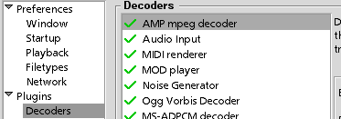
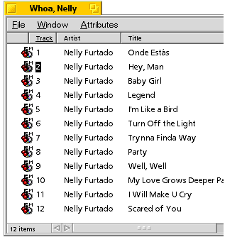

Install SoundPlay
Download SoundPlay. I recommend you expand it into /boot/apps.
Once expanded, run the SoundPlay installer.
Twiddle SoundPlay's settings
SoundPlay uses a number of plugins to perform audio decoding. When it wants
to identify a file, SoundPlay lets each decoder have a look at it, and selects the
decoder that claims to understand the file best. Thus, SoundPlay and (by extension)
Be in your Stereo perform better when the more common mp3 decoder is asked first.
To arrange that:
- Start SoundPlay. 
- Click on the Settings menu, then Preferences.
- In the window that comes up, click on "Decoders" in the left pane.
- In the right pane, drag and drop "AMP mpeg decoder" to the top of the list.
Your system will now let the mpeg audio decoder have first crack at recognizing files.
Install the SoundPlay plugin
The installation script provided with this package will:
- Build the necessary mp3 indexes and offer to populate them (see "Building an mp3 database", below). Answer no only if
you know that you already have such a database, and it is indexed properly.
- Offer to install the SoundPlay plugin to the "Plugins" folder for SoundPlay. If you answer no, you'll have to do the installation yourself.
- Install a default skin so you can use the program.
- Install PHP.
If the installer reports failure -- having several versions of SoundPlay will certainly confuse it --
then you have to do it yourself. Find the SoundPlay directory in Tracker,
and drop the Be In Your Stereo program into
the Plugins directory.
Building an mp3 database

Be in your Stereo draws on five BFS attributes to gain extra information
about the files in your collection: Year, Genre, Artist, Producer and Album.
Attributes contian additional information about a file, and can be indexed for
quick retrieval.
These audio attributes come pre-installed with BeOS R5, and are automatically
installed by a number of systems such as RipEnc and
id3attr. The installer script provided in this package will
also build the indices and populate them with any information which is currently in your BFS attributes.
If you're like most people, you probably don't initially have much information in your BFS attributes
for your audio files. Fortunately, building up this information is easy. The BeOS tip server
has a useful article
on this topic.
The following approach will probably work well:
- Install and run id3attr.
mp3 audio files support a small amount of extended information called
id3. Many encoders will automatically populate the id3 information from places like
CDDB or FreeDB.
An obvious thing to do is pull id3 information out
and store it in BeOS attributes, and tools like id3attr do just that.
- Once the id3 tags have been extracted, you can use something like
MP3 Tags and Attributes
or MP3 Army Knife to graphically set and re-write information with a Tracker add-on.
Of course, Tracker will let you edit the attributes directly.
-
Remember, you're not obliged to have every attribute of every file set. However, at least one of the attributes must
be set in order for the file to be found.
Making it run forever
This section is skippable for now; come back when you need to set up your Be machine as part of your stereo.
Once you've got your attributes set up:
- Place a line like the following in /boot/home/config/boot/UserStartup:
launch /boot/apps/SoundPlay/SoundPlay
- Start SoundPlay, and open its preferences panel. Configure SoundPlay's startup settings (i.e. "resume playing") in a way that seems reasonable.
- Turn on Be in your Stereo and configure its settings in a way that seems reasonable.
- Quit SoundPlay to save your settings.
- Test your machine out by rebooting it, and pointing a web browser at its port 8080 once it starts.
- Disconnect everything except your network connection, and place it next to your stereo.
- Enjoy the sounds!
- If you're using a separate webserver, rather than the built-in one, you'll have to make it run
on startup using a similar technique.
There is the important question of how you add files to your collection. This facility is not supported at all
by the plugin, so you need to resort to some other tools for now. Some thoughts:
next: usage